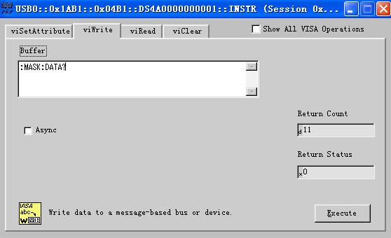
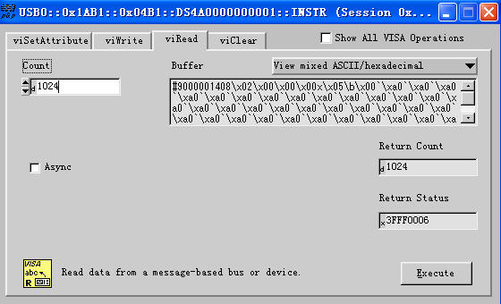

:MASK:DATA
命令格式
:MASK:DATA <mask>
:MASK:DATA?
功能描述
下载或上传通过/失败测试的规则。<mask>是二进制数据块。
说明
下载时，直接在命令字符串后跟数据流，一次性完成发送。
上传（:MASK:DATA?）时，读取到的数据由2个部分组成，分别是TMC数据描述头和MASK数据。TMC数据描述头格式为 #NXXXXXX。其中#为标志符，N小于等于9，其后跟随的N个数据表示数据流的长度（字节数）。如#9000001408， 其中N为9，其后的000001408表示后面含有1408个字节的 有效数据。MASK数据以ASCII形式表示。
举例
注意：确保有足够的缓存接收数据流，否则在读取时程序可能异常 。
--------------------------------发送：------------------------------------------

--------------------------------读取：------------------------------------------
